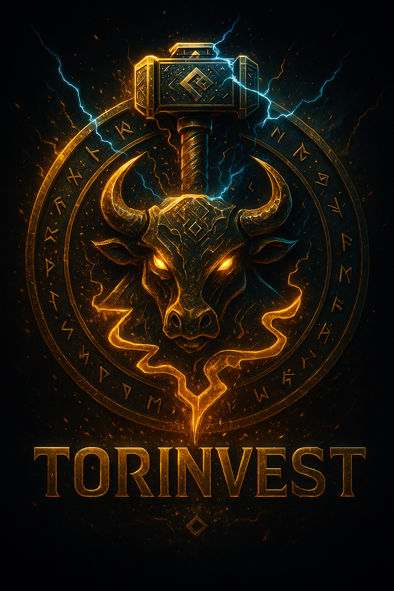

La Forge entre bientôt dans le Web3 — premières créations en approche.

Voici le premier NFT officiel de TORINVEST :
« Forge Prime – L’Esprit du Taureau ».
Une pièce unique qui incarne la puissance de la Forge, la force mentale,
la discipline du trader et l’énergie brute des marchés financiers.
La collection complète sera révélée très bientôt : rôles exclusifs, accès privés,
utilités dans l’écosystème KRM / ORAX, avantages communautaires…
🔥 Prépare ton wallet Solana.
🔥 Les Forgerons Originels seront les premiers servis.